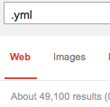
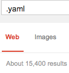

Is it .yaml or .yml?
According to yaml.org, the official file extension is .yaml.
Quote:
Is there an official extension for YAML files?
Please use ".yaml" when possible.
However there seems to be a disagreement on the internet on which extension to
use. If you look up examples on the web, many of them use the unsanctioned
.yml extension.
Searching Google returns nearly 3 times as many results for the shorter one.

49,100

15,400
So which am I supposed to use? The proper 4 letter extension suggested by the creator, or the 3 letter extension found in the wild west of the internet?
Answer
The nature and even existence of file extensions is platform-dependent (some obscure platforms don't even have them, remember) -- in other systems they're only conventional (UNIX and its ilk), while in still others they have definite semantics and in some cases specific limits on length or character content (Windows, etc.).
Since the maintainers have asked that you use ".yaml", that's as close to an "official" ruling as you can get, but the habit of 8.3 is hard to get out of (and, appallingly, still occasionally relevant in 2013).
Suggest
EDIT:
So which am I supposed to use? The proper 4 letter extension suggested by the creator, or the 3 letter extension found in the wild west of the internet?
This question could be:
-
A request for advice; or
-
A natural expression of that particular emotion which is experienced, while one is observing that some official recommendation is being disregarded—prominently, or even predominantly.
People differ in their predilection for following:
-
Official advice; or
-
The preponderance of practice.
Of course, I am unlikely to influence you, regarding which of these two paths you prefer to take!
In what follows (and, in the spirit of science), I merely make an hypothesis, about what (merely as a matter of fact) led the majority of people to use the 3-letter extension. And, I focus on efficient causes.
By this, I do not intend moral exhortation. As you may recall, the fact that something is, does not imply that it should be.
Whatever your personal inclination, be it to follow one path or the other, I do not object.
(End of edit.)
The suggestion, that this preference (in real life usage) was caused by a 8.3 character DOS-ish limitation, IMO is a red herring (erroneous and misleading).
As of August, 2016, the Google search counts for YML and YAML were approximately 6,000,000 and 4,100,000 (to two digits of precision). Furthermore, the "YAML" count was unfairly high because it included mention of the language by name, beyond its use as an extension.
As of July, 2018, the Google's search counts for YML and YAML were approximately 8,100,000 and 4,100,000 (again, to two digits of precision). So, in the last two years, YML has essentially doubled in popularity, but YAML has stayed the same.
Another cultural measure is websites which attempt to explain file extensions. For example, on the FilExt website (as of July, 2018), the page for YAML results in: "Ooops! The FILEXT.com database does not have any information on file extension .YAML."
Whereas, it has an entry for YML, which gives: "YAML...uses a text file and organizes it into a format which is Human-readable. 'database.yml' is a typical example when YAML is used by Ruby on Rails to connect to a database."
As of November, 2014, Wikipedia's article on extension YML still stated that ".yml" is " the file extension for the YAML file format" (emphasis added). Its YAML article lists both extensions, without expressing a preference.
The extension ".yml" is sufficiently clear, is more brief (thus easier to type and recognize), and is much more common.
Of course, both of these extensions could be viewed as abbreviations of a long, possible extension, ".yamlaintmarkuplanguage". But programmers (and users) don't want to type all of that!
Instead, we programmers (and users) want to type as little as possible, and still yet be unambiguous and clear. And we want to see what kind of file it is, as quickly as possible, without reading a longer word. Typing just how many characters accomplishes both of these goals? Isn't the answer three (3)? In other words, YML?
Wikipedia's Category:Filename_extensions page lists entries for .a, .o and .Z. Somehow, it missed .c and .h (used by the C language). These example single- letter extensions help us to see that extensions should be as long as necessary, but no longer (to half-quote Albert Einstein).
Instead, notice that, in general, few extensions start with "Y". Commonly, on the other hand, the letter X is used for a great variety of meanings including "cross," "extensible," "extreme," "variable," etc. (e.g. in XML). So starting with "Y" already conveys much information (in terms of information theory), whereas starting with "X" does not.
Linguistically speaking, therefore, the acronym "XML" has (in a way) only two informative letters ("M" and "L"). "YML", instead, has three informative letters ("M", "L" and "Y"). Indeed, the existing set of acronyms beginning with Y seems extremely small. By implication, this is why a four letter YAML file extension feels greatly overspecified.
Perhaps this is why we see in practice that the "linguistic" pressure (in natural use) to lengthen the abbreviation in question to four (4) characters is weak, and the "linguistic" pressure to shorten this abbreviation to three (3) characters is strong.
Purely as a result, probably, of these factors (and not as an official endorsement), I would note that the YAML.org website's latest news item (from November, 2011) is all about a project written in JavaScript, JS-YAML, which, itself, internally prefers to use the extension ".yml".
The above-mentioned factors may have been the main ones; nevertheless, all the factors (known or unknown) have resulted in the abbreviated, three (3) character extension becoming the one in predominant use for YAML—despite the inventors' preference.
".YML" seems to be the de facto standard. Yet the same inventors were perceptive and correct, about the world's need for a human-readable data language. And we should thank them for providing it.